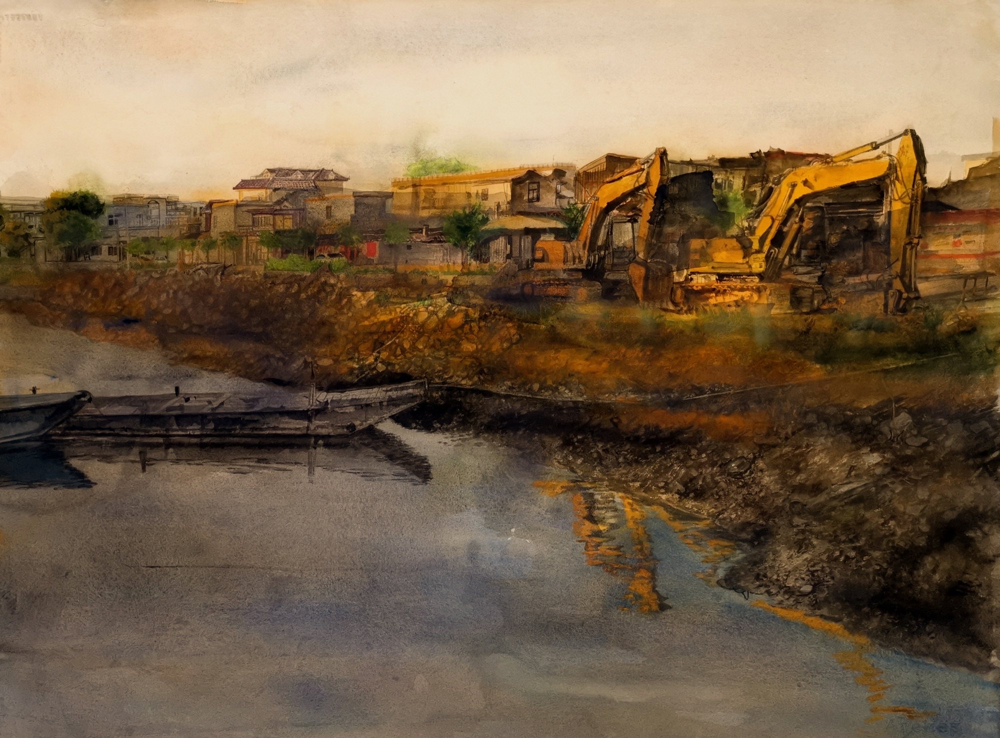

Sunset over the Riverside
水岸夕阳

- Artwork ID / 作品编号
- KW-W-000032
- Year / 年份
- 2024
- Medium / 媒介
- Watercolor on paper / 纸本水彩
- Dimensions / 尺寸
- 53 × 76 cm (H × W / 高 × 宽)
About the work / 作品介绍
Sunset over the Riverside was inspired by a rural sketching trip. At the end of the day, construction had stopped, and the setting sun bathed the river, machinery, village, and surrounding landscape in warm golden light. Across the water, villagers gathered outside a small shop, chatting quietly as evening settled in. Rather than depicting construction itself, the painting captures the peaceful moment when people, land, and nature return to the same rhythm. Reflections on the water connect the changing rural landscape with the quiet warmth of everyday life.
《水岸夕阳》创作于一次乡村采风途中。傍晚时分，工人已经收工，夕阳将河岸、机械、村庄与水面一同染成温暖的金色。远处的小卖店仍有人闲坐交谈，整个村庄笼罩在平静而祥和的氛围之中。作品记录的不是建设现场的忙碌，而是一天结束后人与土地重新回归宁静的时刻。流动的河水映照着夕阳，也映照着变化中的乡村景观，使自然、生活与建设在同一片光线中达到和谐共存。